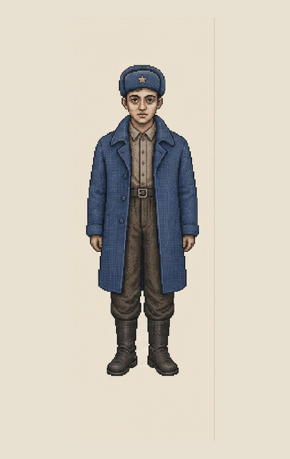
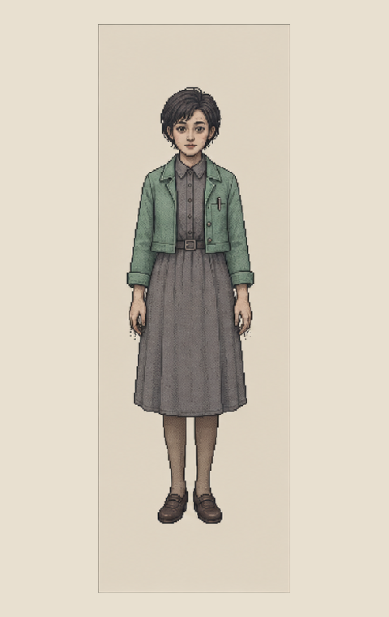

PERSON-LIN / 28 / DISTRICT 12
林默
愿意一遍遍补材料，却始终先问：“驳回会不会触发调查？”他想要一个住所，也想让那三个月继续没有名字。
林默想与沈青禾正式共同生活。但他们越努力证明“现在住在一起”，越会暴露林默曾经有三个月在行政记录中没有住所、没有排班，也没有被任何辖区承认。

人物颜色只用于辨认立场：林默是冷靛蓝，沈青禾是青瓷绿。
愿意一遍遍补材料，却始终先问：“驳回会不会触发调查？”他想要一个住所，也想让那三个月继续没有名字。

她比林默更想把事实说清楚，也更害怕把未修改的记录交回系统。她的校对习惯让她保留了不同版本。
事故期间，林默被临时调往第七码头的夜间信号线路。他见过人员转运，也恢复过一段没有进入官方时刻表的线路。事故结束后，临时调令、宿舍登记和排班记录被分属不同部门处理，林默因此成为行政意义上的空白。
每次回访都增加一层规则，同时让生活申请更接近事故证据。
林默希望把沈青禾加入自己的住所与家庭配额。
沈青禾的身份证明、居住材料与跨区转送记录。
林默反复确认缺件是否只会驳回，不会触发调查。
沈青禾以第七区居民身份申请迁入第十二区。
临住日期落在林默失踪期间，住所记录显示“无人承担辖区责任”。
沈青禾想说明第七码头的经历，林默阻止她继续说。
两人终于带齐所有常规材料。
身份、转送编号、临住证明、容量确认均有效。
旧工作证明的地点属于污染封锁区，日期早于官方事故。
玩家是否让这张“与住房无关”的附件进入正式档案。
单独看，每一项都只能证明很小的事实；组合以后，事故时间线开始改变。
本线必须保留生活利益与证据利益之间的张力。
两人无法稳定共同生活。沈青禾可能在夜间单独出现；监察关注较低，人物信任下降。
证据最完整，但人物必须承受等待成本。住房配额在数日内继续不稳定。
两人较早获得住所，却可能因为异常附件没有入档，使事故线失去合法旁证。
兼顾生活与证据，但第七天监察会看见玩家主动保留了与当前事项无关的材料。
避免用熟悉的悬疑捷径削弱这条行政生活线。
不要把林默写成失忆者、秘密特工或隐藏主角。
不要让沈青禾只负责解释剧情；她有自己的风险判断。
不要用一封信一次性讲完三个月发生的所有事情。
不要让批准共同居住自动等于发现事故真相。